Aula 1 - Começando com o Construct3
Construct 3

Aula 1 - Começando com o Construct3Construct 3O que é?Primeiros passos no Construct3Vendo exemplosJogos prontosModelos (Templates)Vamos começar...Criando uma nova contaCriando um novo projetoConfigurando o armazenamento em NuvemAbasAba LayoutÁrea de LayoutMenu de PropriedadesMenu ProjetoTilemapLayersDicasAdicionando um Objeto ao jogoVamos começarBackgroundPlataforma
O que é?
- Construct 3 é uma ferramenta para a criação de jogos 2D voltada para não programadores;
- A versão 3 do Construct é baseada na plataforma web, ou seja, nada precisa ser baixado ou instalado no computador, o acesso pode ser feito por um browser atualizado como Google Chome, Mozila Firefox, Opera, Safari etc.;
- Foi desenvolvido pela Scirra Ltda e a primeira versão foi lançada em 2007;
- Permite a criação rápida de jogos por meio do sistema drag-and-drop (arrastar e soltar);
- No Construct entender a lógica de como um jogo funciona é mais importante do que saber alguma linguagem de programação já que o código do jogo é feito de forma visual por meio de blocos;
Primeiros passos no Construct3
Vendo exemplos
Jogos prontos
- A ferramenta pode ser acessada pela URL: editor.construct.net;
- Se você preferir pode usar a versão desktop da ferramenta (download em: C3 Desktop);
- Já na página inicial você pode encontrar alguns exemplos de jogos prontos e de modelos, os modelos são muito úteis para entender como alguns comportamentos simples funcionam;
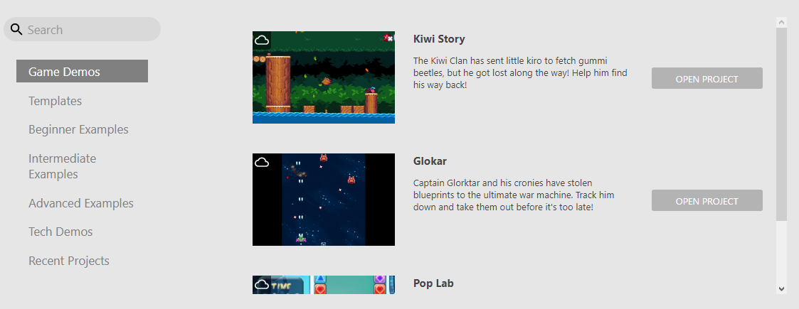
Exemplos de jogos prontos
Modelos (Templates)

Modelos para jogos
Você pode clicar no ícone do projeto ou em "Open project" para abrir um desses projetos. Se ele for um modelo, você pode criar seu jogo tranquilamente se salvar como um jogo separado.
Vamos começar...
Criando uma nova conta
Como usaremos a versão gratuita do Construct, é necessário que criem uma conta no site pois com uma conta e com o e-mail verificado algumas opções são desbloqueadas:

Funções disponíveis na versão gratuita sem login:

Funções disponíveis na versão gratuita com login
Para criar uma nova conta vá em guest e então em register:
 Menu para a criação da conta
Menu para a criação da conta
Preencha o formulário com um nome de usuário, e-mail (algum que você tenha acesso fácil já que um e-mail será mandado para ele) e uma senha:

Formulário de criação de conta
Você receberá um e-mail de confirmação (caso não receba não esqueça de verificar a lixeira)

E-mail recebido
Abra o e-mail e clique no link de confirmação

Mensagem
 Conta verificada
Conta verificada
Agora volte para o site do Construct 3 e faça login na conta que você criou
 Botão de login
Botão de login
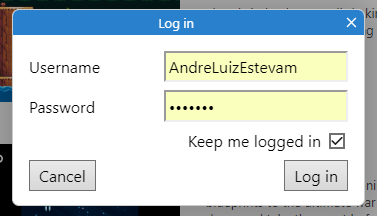 Campos de login
Criando um novo projeto
Clique no botão NEW PROJECT e coloque as configurações conforme as da imagem, então clique em Create

Name: "MyFirstPlatformer"
- Pode ser o nome que você quiser, mas é melhor colocar algo que te ajude a encontrar o arquivo
Choose preset: "Retro style"
- Aqui é escolhida a resolução do jogo, como o jogo terá o estilo 16-bits, escolhemos o RetroStyle
Viewport size: "320 x 180"
- Esse valor não precisa ser alterado
- Aqui é escolhida a área que a câmera do jogo vai "filmar", indica o tamanho do retângulo pontilhado que você vai ver a seguir
Orientations: "Landscape"
- A orientação do jogo define se a tela será mostrada na Horizontal ou Paisagem (Landscape), na Vertical ou Retrato (portrait) ou Ambos (any)
- Como será um jogo para computador, definimos a orientação como Paisagem
Optimize for pixel art: [x]
- O jogo terá um estilo retro, por isso marcamos a opção de otimizá-lo para pixel art
Clique em Create e a ferramenta de edição será aberta
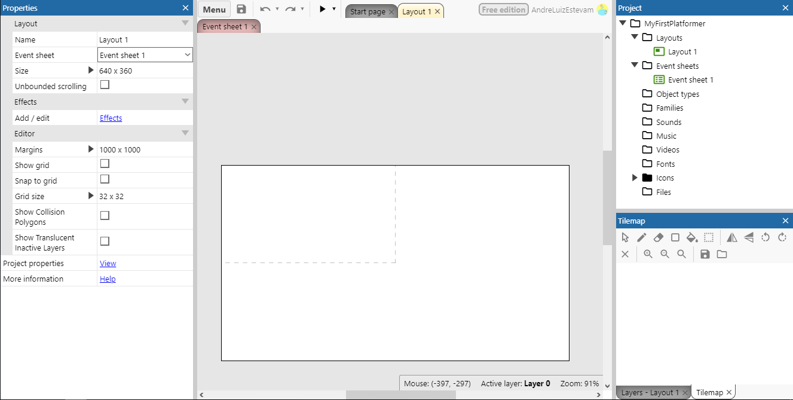
Configurando o armazenamento em Nuvem
Antes de tudo, vamos configurar o armazenamento e salvamento automático do seu jogo em nuvem. Será guardado como um arquivo no seu Google Drive, OneDrive ou Dropbox. É preciso autorizar o Construct a salvar e ler os arquivos do jogo de uma dessas contas.
Vá em Menu > Project > Save

Nesse exemplo, será utilizado o Google Drive, mas os passos são muito semelhantes para as outras ferramentas.
Faça login em sua conta:
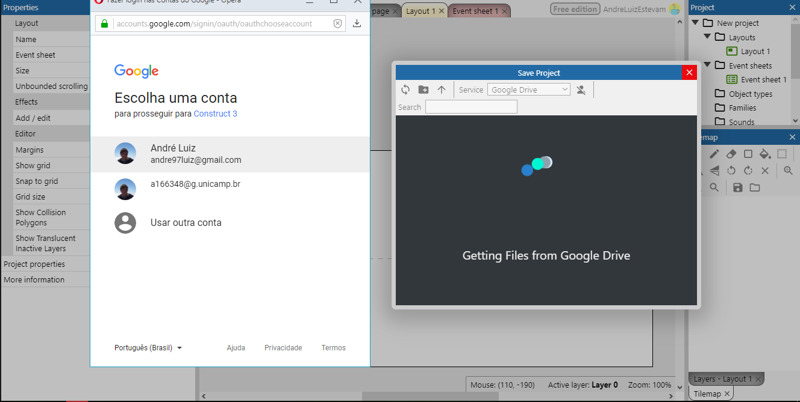
Permita o acesso do Construct3:

Use a ferramenta para criar uma nova pasta e salve o projeto nela:

Se você preferir, pode baixar uma cópia do jogo a qualquer momento e guardá-la com você, vá no seguinte menu:

Caso você queira carregar esse arquivo que baixou, use a opção load from file na página inicial:

e selecione o arquivo baixado
Abas
Pronto, agora o projeto foi criado e o backup está configurado, vamos começar a entender a interface
Na ferramenta, existem dois tipos de abas:
- Layout
- Event Sheet

- Na aba layout é feito tudo relacionado a parte gráfica e configurações do jogo
- Na aba event sheet é feito tudo relacionado a programação do jogo
Aba Layout
Área de Layout
No layout você perceberá que existem dois retângulos, um retângulo brando e uma área pontilhada dentro dele

O retângulo maior define a área onde seu jogo vai acontecer, essa área é chamada de layout ou cena do jogo, é importante concentrar seu jogo nela já que para deixar o jogo mais rápido e economizar memória é comum que se delete algum elemento do jogo que esteja fora do layout.
O retângulo menor com lados tracejados define onde a câmera do jogo começará, ou seja, quando você rodar o jogo, o que estiver dentro do retângulo será mostrado na tela, por conta disso, é interessante começar o jogo por ele.
Menu de Propriedades
Conforme objetos forem adicionados, quando você clicar neles as propriedades serão exibidas nesta janela. 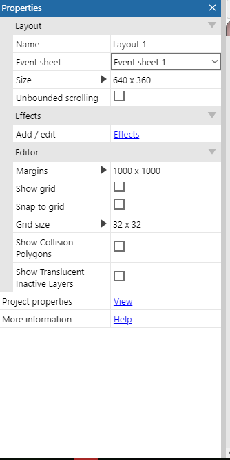
Menu Projeto

Nesse menu ficam todos os arquivos do jogo, inclusive os mostrados nas abas de Layout e Event sheet.
Dica:
Caso as abas Layout ou Event Sheet desapareçam, use este menu para abri-las novamente, você pode dar um clique duplo ou usar o botão direito do mouse.

Tilemap
 Este menu é utilizado para facilitar a criação do visual do seu jogo, você verá isso em detalhes nos próximos tópicos.
Este menu é utilizado para facilitar a criação do visual do seu jogo, você verá isso em detalhes nos próximos tópicos.
Layers
 O jogo pode ser dividido em camadas, esse menu é utilizado para gerencia-las, usando esse esquema você pode colocar objetos atrás ou na frente do cenário principal e ter um controle melhor disso, podendo deixar transparente todos os objetos que estão em uma determinada camada, por exemplo.
O jogo pode ser dividido em camadas, esse menu é utilizado para gerencia-las, usando esse esquema você pode colocar objetos atrás ou na frente do cenário principal e ter um controle melhor disso, podendo deixar transparente todos os objetos que estão em uma determinada camada, por exemplo.
Dicas:
- Se você tentou mudar o cenário e não conseguiu, verifique se o desenho do cadeado está marcado como fechado e clique para marca-lo como aberto, cadeado fechado indica que a camada não pode ser editada;
- Se você percebeu que o cenário que estava fazendo desapareceu, verifique se a caixa de checagem antes do cadeado está desmarcada, caixas desmarcadas indicam que o que estiver naquela camada não deve ser mostrado na tela;
Vamos começar mudando o nome dessa camada, clique no nome dela para seleciona-la, você verá que o conteúdo do menu de propriedades mudará.
Vá no campo name e mude o valor dele de layer 0 para game e aperte enter para confirmar:

Dicas
Menus sumiram
Se você perceber que algum dos menus citados anteriormente desapareceu, o coloque de volta usando o menu menu > View > Bars:

você perceberá que caso clique em um menu faltante (tirando os três últimos da lista que estão disponíveis apenas na versão paga do Construct) ele aparecerá na tela, você pode arrasta-lo para a posição que desejar.
 Nomes
Nomes

Sempre renomeie os objetos do jogo para o que eles representam, isso será muito útil e facilitará seu trabalho na hora da programação.
Use F2 com o mouse sob o campo que quer editar ou use a ferramenta de renomear.

Teclas de atalho e uso do mouse
- Use a tecla
F11para colocar ou tirar a ferramenta da tela cheia; - Use
shift + roda do mousepara dar zoom no cenário; Aperte a roda do mouse e arrasteouespaço + arrastar o mousepara se mover pelo cenário;- Use a tecla
F2com o mouse em cima de um campo de texto para editá-lo; roda do mousepara se mover na vertical;shift + roda do mousepara se mover na horizontal;ctrl + epara ir ao event sheet;ctrl + lpara ir ao layout;
Adicionando um Objeto ao jogo
Tudo dentro do jogo é representado como objetos de vários tipos, o teclado é tratado como um objeto assim como o jogador é tratado como um objeto, mas eles são de tipos diferentes, portanto, realizam ações diferentes.
Vamos inserir um objeto que representa o teclado. Clique com o botão direito do mouse e escolha a opção insert new object:

Você verá a lista dos tipos de objeto:
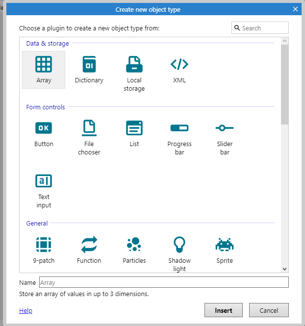 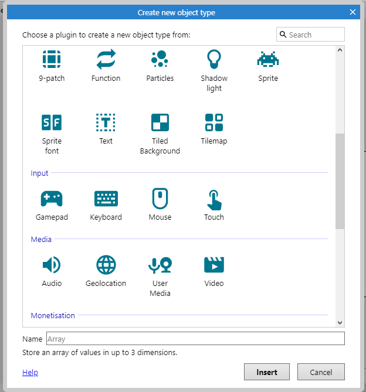 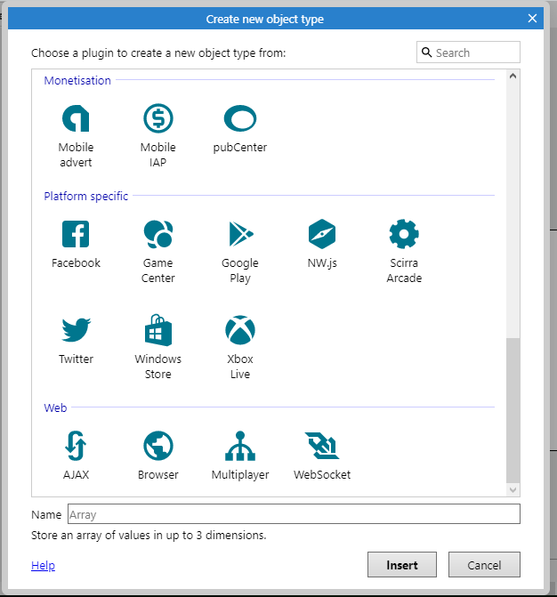
Existem muitos tipos de objetos:
- Objetos para guardar informações;
- Para representar elementos visuais dentro do jogo;
- Para interagir com o usuário desde com o teclado até com a webcam;
- Para se comunicar com a internet e com as redes sociais;
Para começar, procure o objeto Keyboard e dê um clique duplo nele para adicioná-lo ao jogo.
Você verá que ele foi adicionado à pasta de tipos de objeto.

Esse processo se repetirá para todos os objetos que adicionaremos ao jogo, alguns dos mais utilizados são:
- Sprite: podem representar qualquer objeto no jogo, jogador, inimigo, cenário etc.;
- TiledBackground: utilizado para colocar uma imagem de fundo no jogo, você pode partir de uma só imagem e fazer com que ela se repita como um mosaico;
- Tilemap: utilizado para construir elementos de cenário, é comum que se coloquem os "blocos" que representam o cenário em uma só imagem, um tilemap permite separar cada bloco;
- Text: utilizado para escrever textos no jogo;
- Spritefont: funciona como o text mas a fonte é estilizada e tem como fonte um arquivo de imagem;
- Particles: se baseia em uma imagem para criar partículas no jogo como fumaça, poeira ou fogo, por exemplo;
- Gamepad, Keyboard, Mouse e Touch: são utilizados para interagir com os equipamentos que dão o nome a eles;
Vamos começar
Background
Adicione um novo objeto do tipo Tiled Backgound
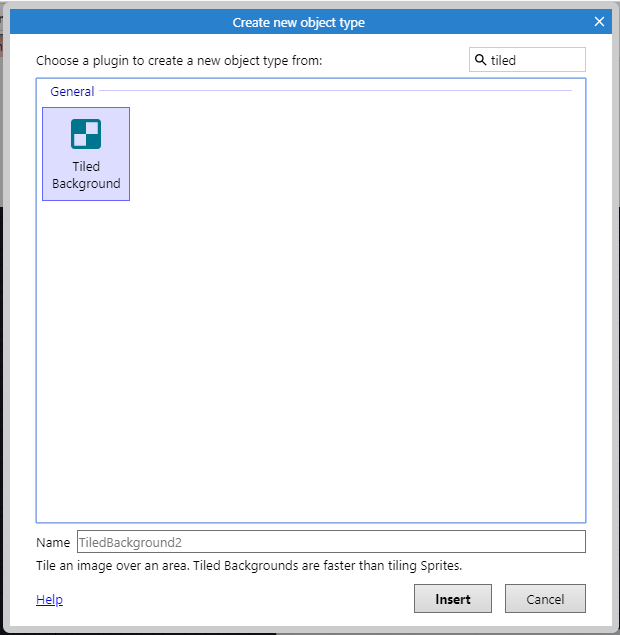
Use a opção de pasta para selecionar o arquivo do computador.

Vá até a pasta onde estão os planos de fundo e escolha o arquivo Background/tiled_bg.png:

Com o arquivo importado, aumente o tamanho do tiled Background para que ele preencha todo o layout e um pouco mais.
As imagens de fundo são especialmente preparadas para que pareçam uma só quando colocamos várias delas lado a lado, funciona como um mosaico.

Plataforma
Adicione um novo objeto da mesma forma como você fez antes, mas dessa vez escolha o tipo Tilemap

Abra o gerenciador de arquivos e selecione a imagem Scenario/tilemap.png  Essa imagem possui vários blocos de 16 por 16 pixels que representam o chão do game
Essa imagem possui vários blocos de 16 por 16 pixels que representam o chão do game

Assim como o Tiled Background aumente o tamanho do objeto para que ele fique maior que a tela.
Dica: ao mudar o tamanho de objetos, você pode apertar Shift e arrastar o mouse clicando em uma das abas para mudar o tamanho do objeto sem fazer com que ele seja distorcido.
Mude a aba inferior de Layers para Tilemap, passando o mouse por cima dos desenhos você verá que a seleção é maior que o tamanho dos blocos, precisamos mudar isso indo nas propriedades e mudando os atributos.
Tile widtheTile heighpara16
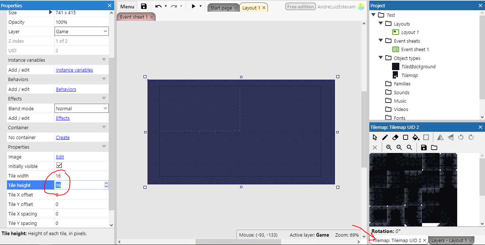
Agora você pode clicar em uma célula no menu tilemap e usar a ferramenta lápis para desenhar o cenário do seu jogo

- 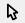 Use para voltar ao mouse normal;
- Use para pintar o cenário;
 Use para apagar algum erro;
Use para apagar algum erro;- 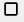Use para pintar áreas maiores;
 Use para espelhar a célula selecionada;
Use para espelhar a célula selecionada; Use para rodar a célula selecionada;
Use para rodar a célula selecionada;
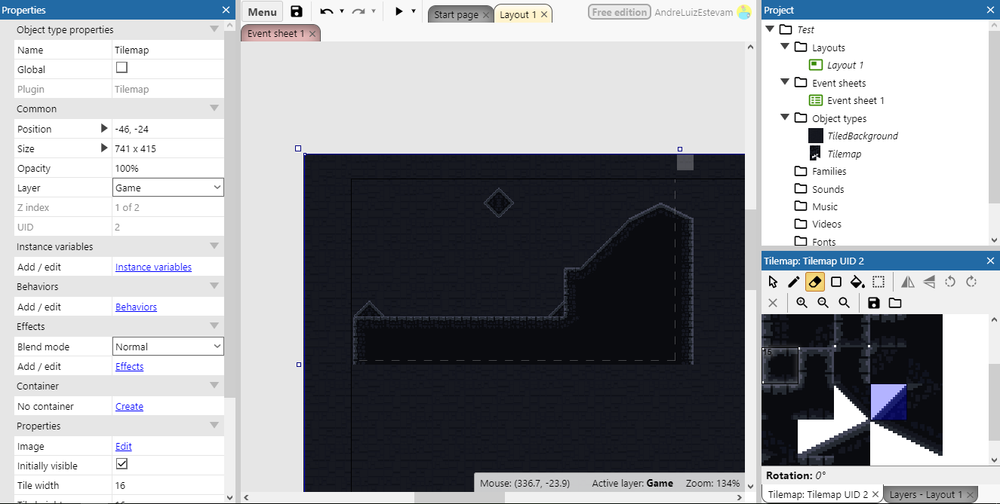